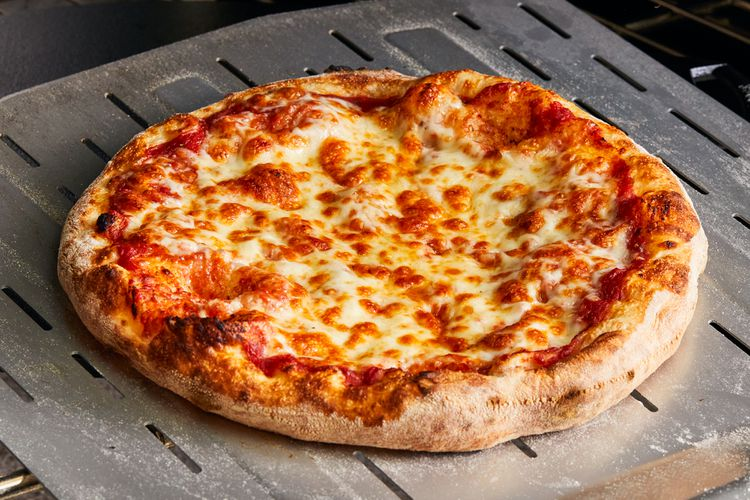

Pizza

Description
Home made chewy pizza ready within 30 minutes
Ingredients
- Pizza flour a.k.a 00 flour: 2 cups
- Pizza instant yeast: 1 sachet
- Olive oil: 3 tbsp
- Low fat milk: 2/3 cup
- Sugar: 1.5 tsp
- Salt: 3/4 tsp
- Pizza sauce
- Mozzarella cheese
Steps
- Mix 1 cup of flour with yeast, sugar, salt and olive oil
- Heat the low fat milk (don't boil) and add it to the above then mix
- Gradually add the remaining 1 cup of flour until the dough is not sticky
- Knead for 4 minutes
- Roll with wood rolling pin
- Add the pizza sauce and cheese plus any toppings of your choice
- Heat in the oven for 12-15 minutes at 425 F